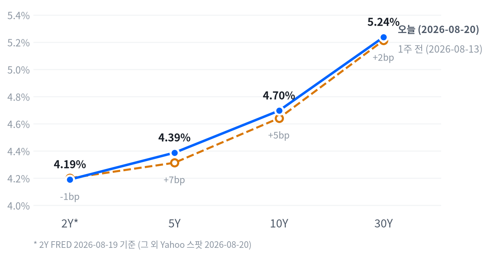

월마트가 EPS·매출 모두 컨센서스를 상회했음에도 미국 동일점포매출 증가율이 2.6%로 6년 만에 최저치를 기록하고 밋밋한 3분기 가이던스를 내놓으면서 주가가 장중 두 자릿수% 급락, 다우를 3대 지수 중 가장 크게 끌어내렸다. 전일(8/19) 재무부의 장기채 바이백 확대로 눌렸던 국채금리가 하루 만에 되돌림에 들어가 10년물이 +4.3bp 반등한 것도 지수 전반에 부담을 줬다.
반면 삼성전자(+9.49%)·SK하이닉스(+12.73%)의 주주환원 기대와 마벨의 구글 AI칩 계약 소식은 마이크론(+3.97%)·마벨(+5.79%)·루멘텀(+6.24%) 등 미국 메모리·AI 옵틱스주를 지수 하락과 반대로 밀어올렸다.
동인. 오늘 하락의 진앙은 월마트였다. EPS·매출 모두 컨센서스를 상회했음에도 미국 동일점포매출 증가율이 2.6%로 6년 만에 최저치를 기록하고 3분기 가이던스가 밋밋하게 나오면서 주가가 장중 두 자릿수% 급락했고, 셔윈윌리엄스·홈디포 등 소비재·유통 관련주가 동반 약세를 보이며 다우를 3대 지수 중 가장 크게 끌어내렸다(-1.32%). 여기에 재무부 바이백發 국채 랠리(8/19)가 하루 만에 되돌려지며 10년물이 +4.3bp 반등, 할인율 부담이 다시 커진 것도 지수 전반의 하방 압력으로 작용했다.
크로스에셋 정합성. 국채금리 반등·주식 하락·달러 보합권이라는 조합은 오늘의 하락이 순수한 금리 충격이라기보다 개별 기업 실적發 소비 둔화 우려와 실질금리 반등이 겹친 결과에 가깝다는 점을 보여준다. 신용시장(하이일드 -2bp, 투자등급 -1bp)이 오히려 안정적이었던 점은 오늘의 조정이 아직 스트레스 이벤트로 번지지 않았다는 신호다. 반면 금(+1.91%)과 메모리·AI 옵틱스(마이크론 +3.97%, 마벨 +5.79%, 루멘텀 +6.24%)가 지수 하락과 반대로 강세를 보인 것은, 이 국면에서 매크로 재료보다 개별 산업 재료(안전자산 수요·한국 메모리 주주환원·AI 광통신 계약)가 더 크게 작동했다는 뜻이다.
다음 촉매. 다음 세션 관전 포인트는 두 갈래다. 하나는 재무부 바이백發 안도 랠리가 완전히 소멸했는지, 30년물이 다시 5.4%를 향해 갈지 여부이고, 다른 하나는 오늘의 월마트 쇼크가 소비 둔화의 업종 전반 신호인지 개별 기업 이슈인지를 확인하는 것이다. 신규 실업수당 청구(206K, 컨센서스 210K 하회)가 노동시장이 급격히 무너지지 않고 있음을 보여준 만큼, 다음 주 소비 관련 지표와 8/27 마벨 실적이 이 국면의 다음 방향을 가를 변수다.
| 지수 | 종가 | 등락 | 등락률 |
|---|---|---|---|
| S&P 500 Growth | 138.37 | -0.96 | -0.69% |
| S&P 500 | 7,641.16 | -66.82 | -0.87% |
| S&P 500 Value | 236.10 | -2.35 | -0.99% |
| Nasdaq | 26,067.17 | -263.92 | -1.00% |
| Dow | 52,759.21 | -703.84 | -1.32% |
| Russell 2000 | 2,992.43 | -40.51 | -1.34% |
| 섹터 | 등락률 |
|---|---|
| Energy | +0.27% |
| Real Estate | +0.20% |
| Materials | -0.19% |
| Technology | -0.29% |
| Utilities | -0.57% |
| Communication Services | -0.57% |
| Financials | -0.92% |
| Industrials | -1.20% |
| Consumer Staples | -1.41% |
| Consumer Discretionary | -1.61% |
| Health Care | -1.87% |
나스닥은 09:30 ET 개장과 거의 동시에 시가 대비 +0.23%로 장중 고점을 찍은 뒤 오후까지 줄곧 밀려 14:00 ET에 -0.69%까지 저점을 낮췄고, 종가는 개장 대비 -0.52%로 저점에서 소폭 반등한 채 마감했다. S&P500도 개장 후 11:00 ET까지는 +0.12%로 고점을 더 높인 다음 되밀리기 시작해 15:30 ET에 -0.67%까지 저점을 찍었고, 그 근처인 -0.63%로 장을 마쳤다.
러셀2000은 궤적이 가장 뚜렷했다. 09:30 ET 시가가 곧 장중 고점이었고 이후 반등 없이 내리 밀려 14:00 ET에 -1.00%까지 저점을 낮췄으며, 종가도 저점 근처인 -0.91%에서 벗어나지 못했다 — 대형주가 오후 들어 낙폭을 일부 되돌린 것과 달리 소형주는 저점 마감에 가까웠다.
이 되돌림의 진앙은 월마트였다. 어닝비트에도 동일점포매출 증가율이 6년 만에 최저치로 나오면서 주가가 장중 두 자릿수% 급락했고, 그 충격이 오전 고점 이후 지수 전반의 하락 전환과 시점이 겹친다. 여기에 전일 재무부 바이백發 국채 랠리가 되돌려지며 10년물이 재상승한 것도 오후 내내 지수를 눌렀다.
오늘 하락은 매크로 충격이 아니라 개별 기업 실적發 소비 둔화 우려에 가깝다. 월마트의 동일점포매출 둔화(2.6%, 6년래 최저)는 미국 소비자의 저변이 느려지고 있다는 신호로 읽히며, 셔윈윌리엄스(-2.99%)·홈디포(-2.85%) 등 소비재·유통 관련주가 동반 약세를 보이며 다우를 끌어내렸다. Health Care(-1.87%)가 섹터 중 최대 낙폭을 기록했는데 이는 월마트와 직접 관련이 낮아, 오늘 조정이 단일 재료에 갇히지 않고 방어주 전반의 차익실현으로 번진 측면도 있다.
다만 Energy(+0.27%)·Real Estate(+0.20%)만 강보합을 유지했고, 메모리·AI 옵틱스 개별 종목은 지수와 반대로 급등해 오늘의 매도가 브로드하지 않고 재료가 있는 곳(월마트·금리)에만 선택적으로 반영된 로테이션이라는 점을 보여준다. 포트폴리오 관점에서는 이 조정을 소비 둔화의 업종 전반 신호로 확대 해석하기보다, 다음 소매업체 실적에서 유사한 패턴이 반복되는지를 확인하는 것이 먼저다.
| 만기 | 종가(2026-08-20) | 전일比(bp) | 1주 전 | 주간 변화(bp) |
|---|---|---|---|---|
| 2Y* | 4.19% | 0.0bp | 4.20% (8/12) | -1.0bp |
| 5Y | 4.387% | +3.4bp | 4.313% (8/13) | +7.4bp |
| 10Y | 4.696% | +4.3bp | 4.641% (8/13) | +5.5bp |
| 30Y | 5.237% | +4.3bp | 5.213% (8/13) | +2.4bp |

차트의 2Y*는 FRED 2026-08-19 기준(1영업일 지연), 나머지 만기는 Yahoo 스팟 2026-08-20 기준으로 표기 기준일이 다르다는 점을 감안해서 볼 것.
2s10s 스프레드는 50.6bp다(2Y는 FRED 8/19, 10Y는 Yahoo 8/20 기준이 섞인 값). 두 다리의 날짜를 맞춘 FRED 동일자(8/19) 기준으로는 46.0bp로 4.6bp 낮은데, 이 차이는 5bp 문턱에는 못 미쳐 날짜 불일치를 대단히 크게 부풀리는 수준은 아니다. 당일 커브 형태를 논할 때는 두 다리 모두 Yahoo 8/20 동일자인 5s30s 스프레드 85.0bp를 기준으로 삼는다.
오늘 하루로 보면 10년물과 30년물이 나란히 +4.3bp, 5년물이 +3.4bp 올라 장기물이 벨리보다 약간 더 크게 튀는 완만한 베어 스티프닝이 나타났다. 주간 단위로는 정반대다 — 5년물이 +7.4bp로 가장 크게 오르고 10년물 +5.5bp, 30년물 +2.4bp 순으로 오름폭이 줄어들어(5s30s 주간 -5.0bp) 벨리가 장기물보다 더 빠르게 밀린 베어 플래트닝이 이번 주 내내 이어졌다.
2Y는 FRED 기준 1주 전(8/12) 대비 -1.0bp에 그쳐 있고 관측 구간 자체가 다른 만큼, 단기물이 이 플래트닝에 어느 정도 가담했는지는 단정하지 않는다 — 차트의 2Y*는 이 기준일 불일치를 나타낸 표기다.
FRED 동일자(2026-08-19) 기준으로 본 10년물 명목금리는 하루 동안 -6bp 움직였는데, 이 하락은 실질금리 -6bp 전부에서 나왔고 기대인플레(breakeven)는 0bp로 변동이 없었다. 5년물도 같은 날 명목 -2bp = 실질 -3bp + 기대인플레 +1bp로 실질금리가 주된 동인이었다.
이 8/19의 실질금리 급락은 재무부의 장기채 바이백 확대 발표(오퍼레이션당 최대 20억→40억 달러, 10~20Y·20~30Y 구간, 9/9~11/4 시행)가 수급 채널을 통해 기간프리미엄·실질금리를 눌렀다는 해석과 맞아떨어진다. 다만 오늘 Yahoo 스팟 기준 표에서 확인한 10년물 +4.3bp·30년물 +4.3bp의 되돌림은 아직 FRED 동일자 분해가 나오지 않아 실질금리·기대인플레 중 어느 쪽이 주도했는지는 확인되지 않았다 — Yahoo Finance는 이를 "바이백發 안도 랠리의 소멸(bond relief evaporates)"로 보도했을 뿐 다리별 분해까지는 제공하지 않는다.
주간 기준(FRED, 8/12→8/19)으로도 10년물 명목 -3bp = 실질 -7bp + 기대인플레 +4bp로 실질금리 하락이 기대인플레 반등을 상쇄한 흐름이었다. 같은 기간 10년 기간프리미엄(2026-08-14 기준)은 1일 +1.6bp, 5일 +1.4bp로 오히려 확대돼, 실질금리 하락에도 국채 수급·불확실성 프리미엄은 여전히 얹혀 있다는 뜻으로 읽힌다.
5년 후 5년 기대인플레(2026-08-20 기준 2.34%)는 1일 +2bp, 5일 +7bp로 완만히 오르는 중이라 인플레이션 기대의 앵커가 완전히 안정적이지는 않다. 하이일드 스프레드(2.73%, 8/19 기준, 1일 -2bp)·투자등급 스프레드(0.81%, 1일 -1bp) 모두 오늘 오히려 소폭 좁혀져, 오늘의 증시 조정이 신용시장 스트레스로 번지지는 않았다는 신호도 함께 확인된다.
30년물이 여전히 5.24%대로 근 20년래 고점권을 벗어나지 못한 채 재상승했고, 실질금리 주도로 나타난 8/19 하락 뒤의 8/20 반등은 성장 기대보다 국채 수급·기간프리미엄 압박이 아직 살아있다는 정황에 더 가깝다. §9에서 다루듯 벨리(5년) 중심 보유·장기물 신규 확대 보류라는 기존 포지션을 유지하고, 30년물이 5.05% 밑으로 내려와야 듀레이션을 늘리는 쪽으로 판단을 조정한다.
| 페어 | 종가 | 등락 | 등락률 |
|---|---|---|---|
| DXY | 98.86 | +0.03 | +0.04% |
| USD/KRW | 1,393.77 | -19.81 | -1.40% |
| USD/JPY | 159.05 | -0.50 | -0.31% |
| EUR/USD | 1.1681 | +0.0101 | +0.88% |
USD/JPY는 새벽(01:00 ET) 시가 대비 거의 보합권(-0.02%)에서 저점을 찍은 뒤 하루 종일 꾸준히 올라 20:00 ET에 시가 대비 +0.63%까지 고점을 높였지만, 전일 종가 대비로는 -0.31% 하락 마감했다 — 장중에는 엔화가 계속 밀렸는데도 하루 전체로 보면 여전히 소폭 강세권에 머문 셈이다.
DXY는 +0.04%로 사실상 보합을 유지했지만 개별 페어는 온도차가 컸다. 유로(+0.88%)·엔화(-0.31%, 엔화 강세)·원화(-1.40%) 모두 달러 대비 강세를 보였는데, 유독 원화 강세폭이 컸다.
삼성전자(+9.49%)·SK하이닉스(+12.73%) 급등에 따른 외국인 자금 유입 가능성을 원화 강세의 배경으로 추정할 수는 있으나, 이를 직접 뒷받침하는 보도는 확인되지 않아 정확한 인과관계는 미확정으로 남긴다.
| 품목 | 종가 | 등락 | 등락률 |
|---|---|---|---|
| Gold | $4,575.10 | +85.70 | +1.91% |
| Brent | $93.15 | +1.53 | +1.67% |
| WTI | $86.21 | +0.38 | +0.44% |
| Natural Gas | $2.765 | -0.049 | -1.74% |
WTI는 새벽(01:00 ET) 시가 대비 -0.15% 저점을 찍은 뒤 유럽장 오전(08:00 ET)까지 급등해 +3.82%(장중 고점 $87.69)까지 치솟았다가 정규장 들어 상당 부분을 반납해 최종 +0.44%로 마감했다. 트럼프 대통령이 이란에 대한 경제적 압박을 강화하겠다고 밝힌 것이 오전 급등의 직접적인 계기였고, Brent(+1.67%)도 함께 올랐지만 정규장 되돌림은 WTI 쪽이 더 컸다.
금은 이른 아침(08:30 ET) 시가 대비 -1.11% 저점을 찍은 뒤 오전 내내 반등해 11:00 ET에 +0.89%까지 고점을 높였고, 이후 소폭 되밀렸어도 결국 +1.91%로 마감해 오늘 원자재 중 가장 큰 변동폭을 기록했다. 지수 하락·월마트 쇼크가 겹친 리스크오프 심리와 국채금리 되돌림 속에서도 안전자산 수요가 살아있었다는 뜻이다.
국면은 오늘도 교착에 머문다. 오늘 신규 실업수당 청구가 발표됐지만 고용축 내부 지표 하나라 성장·인플레 두 축 전체를 밀어올리기에는 부족했고, 두 축 모두 여전히 어느 쪽으로도 뚜렷하게 기울지 않는 중립권에 머문다(성장축 -0.182, 인플레축 -0.264). 이 국면이 이어진 지는 나흘째이고, 마지막 국면 전환(8/17) 이후 5영업일 잠금도 아직 풀리지 않았다.
성장 쪽은 고용·생산활동이 완만한 개선·보합권에 머무는 사이 소비가 뚜렷하게 꺾이면서 셋을 합친 성장축 전체가 방향을 잃은 상태다. 물가 쪽도 CPI·PPI의 완만한 둔화와 미시간대 기대인플레의 재가속 판정이 뒤섞여 순합산으로는 완만한 디스인플레이션 그 이상도 이하도 아니다.
이 판정은 실제로 새로운 지표가 축 점수를 밀어야만 국면이 넘어간다는 원칙 위에 서 있다. 오늘처럼 신규 발표가 있어도 그 지표 하나가 두 축의 합산 방향을 바꾸지 못하면 국면은 어제의 판단을 그대로 승계한다.
고용은 개선 쪽이다. 일곱 개 지표 가운데 다섯이 개선 방향을 가리켰다. 오늘 새로 나온 신규 실업수당 청구는 206,000건으로 컨센서스(210,000건)를 하회해 미미하지만 개선으로 판정됐다. 4주 평균은 204000건으로 전주 수정치(199,750건)보다 늘었는데도 판정 체계상으로는 뚜렷한 개선에 속하는데, 이는 헤드라인 수치의 컨센서스 하회 서프라이즈가 모멘텀 판정에 더 크게 반영된 결과로 보인다. 구인건수(JOLTS)는 735.9만 건으로 전월 753.7만 건보다 숫자상으로는 줄었지만 추세 판정으로는 완만한 개선으로 집계됐다. 다만 시간당 임금 증가율은 +0.05%로 전월(+0.29%)보다 뚜렷이 둔화돼, 고용축 안에서도 청구·구인 지표와 임금 지표가 다른 신호를 낸다. 고용축 +0.398
| 지표 | Actual | Forecast | Previous | 발표일 | 판정 |
|---|---|---|---|---|---|
| 신규 실업수당 청구(주간) | 206K | 210K | 212K | 2026-08-20(주간 8/15) | 하회▼ |
| 신규 청구 4주 평균 | 204K | — | 199.75K | 2026-08-20(주간 8/15) | |
| 계속 실업수당 청구 | 1,799K | — | 1,781K | 2026-08-20(주간 8/8) | |
| JOLTS 구인건수 | 7,359K | — | 7,537K | 2026-06(기준월) | |
| 비농업 고용(증감) | -23K | — | +20K | 2026-07(기준월) | |
| 실업률 | 4.1% | — | 4.2% | 2026-07(기준월) | |
| 평균 시간당임금 MoM | +0.05% | — | +0.29% | 2026-07(기준월) |
무엇이 나왔나. 주간(8/15 기준) 계절조정 신규 실업수당 청구는 206,000건으로 전주(수정치 212,000건) 대비 6,000건 줄었고 컨센서스(210,000건)도 하회했다. 4주 이동평균은 204000건으로 전주 수정치 199,750건보다 늘었다. 계속 청구(8/8 기준)는 1,799,000건으로 전주(수정치 1,781,000건) 대비 18,000건 늘었고 보험실업률은 1.2%로 변동이 없었다.
무엇이 그것을 만들었나. 미 노동부(DOL) 원문에 따르면 직전 주 수치가 두 항목 모두 위쪽으로 재수정됐다 — 신규 청구는 209,000건에서 212,000건으로, 4주 평균은 199,000건에서 199,750건으로 각각 상향됐다. 계절조정 전 원계열(NSA) 신규 청구는 172,080건으로 전주 대비 17,123건(-9.1%) 줄어, 계절요인이 예상한 감소폭(-12,077건, -6.4%)보다 실제 감소가 더 컸다 — 계절조정치의 개선이 계절요인의 왜곡이 아니라 실질적인 흐름에도 뒷받침된다는 뜻이다. 주별로는 뉴욕주(+1,379건)만 유일하게 사유가 명시됐는데, 전문·과학·기술서비스업과 건설업, 보건·사회복지업의 감원이 원인으로 제출됐다.
그래서 어떻게 볼 것인가. 헤드라인 서프라이즈(206K vs 210K)는 노동시장이 급격히 무너지고 있지 않다는 신호로 시장에 받아들여졌지만, 계속 청구가 완만히 우상향해온 궤적의 연장선에 있다는 점은 신규 채용은 아직 늘지 않는 가운데 감원만 억제되는 '저해고·저채용' 국면을 뒷받침한다. 이번 발표는 위 레짐 판정을 흔들 만큼 크지는 않았지만(고용축은 여전히 컷포인트 안쪽), 9월 동결 쪽 정책 경로 판단에는 무게를 더하는 방향으로 작용했다.
생산·활동은 보합이다. 다섯 개 지표 중 셋이 개선 방향이지만 나머지가 반대로 움직여 축 전체 방향은 뚜렷하지 않다. 기존주택판매는 406만 건으로 전월 413만 건보다 숫자상으로는 줄었지만 추세 판정으로는 완만한 개선으로 집계됐고, 내구재 주문도 +0.47%로 전월(-4.00%)에서 반등해 개선 쪽에 무게를 보탰다. 반면 산업생산은 전월비 +0.2%로 플러스는 유지했지만 전월(+0.27%)보다 증가폭이 줄어 완만한 후퇴로 판정됐다 — 개선과 후퇴가 뒤섞인 축이다. 비FRED 지표인 필라델피아 연은 제조업지수는 8/20 발표에서 47.4로 컨센서스(25.0)를 크게 웃돌며 2021년 4월 이후 최고치를 기록했지만, 이 축의 신규 발표 판정 대상에는 포함되지 않아 축 점수 자체는 움직이지 않았다. 생산·활동축 +0.224
| 지표 | Actual | Forecast | Previous | 발표일 | 판정 |
|---|---|---|---|---|---|
| 산업생산 MoM | +0.20% | — | +0.27% | 2026-07(기준월) | |
| 내구재 수주 MoM | +0.47% | — | -4.00% | 2026-06(기준월) | |
| 신규주택판매 | 628K | — | 618K | 2026-06(기준월) | |
| 기존주택판매 | 4.06M | — | 4.13M | 2026-07(기준월) | |
| 실질GDP 성장률 QoQ(연율) | +1.5% | — | +2.1% | 2026-04(기준월) | |
| 필라델피아 연은 제조업지수 | 47.4 | 25.0 | 41.4 | 2026-08-20 | 상회▲ |
소비는 뚜렷하게 악화됐다. 두 지표 모두 반대 방향 없이 나빠지며 소비축이 4축 중 가장 크게 꺾였다. 소매판매는 7월 전월비 -0.58%로 6월 +0.25% 증가에서 감소로 전환했고, 미시간대 소비자심리지수는 49.5로 전월(44.8)보다 숫자상으로는 올랐지만 추세 판정으로는 여전히 악화 흐름에서 벗어나지 못했다. 성장축을 구성하는 세 축 가운데 소비 하나가 고용·생산의 개선분을 상쇄하는 구도가 계속된다. 소비축 -1.168
| 지표 | Actual | Forecast | Previous | 발표일 | 판정 |
|---|---|---|---|---|---|
| 소매판매 MoM | -0.58% | — | +0.25% | 2026-07(기준월) | |
| 미시간대 소비자심리지수 | 49.5 | — | 44.8 | 2026-06(기준월) |
물가는 둔화 쪽이지만 폭이 크지 않다. 여덟 지표 중 셋만 뚜렷하게 둔화 방향을 가리켜 절대다수는 아직 재가속이나 교착에 머문다. 소비자물가 전월비는 +0.07%로 전월(-0.42%)에서 반등했지만 여전히 낮은 수준이라 추세 판정으로는 뚜렷한 둔화로 분류됐고, 생산자물가도 전월비 -0.03%로 두 달 연속 마이너스를 이어가며 같은 판정을 받았다. 반대로 미시간대 1년 기대인플레는 4.6%로 전월 4.8%보다 숫자는 낮아졌음에도 최근 수개월 추세 판정에서는 재가속으로 분류돼, CPI·PPI의 완만한 둔화와 기대인플레의 재가속 판정이 물가축 안에서 정면으로 엇갈린다. 물가축 -0.264
| 지표 | Actual | Forecast | Previous | 발표일 | 판정 |
|---|---|---|---|---|---|
| CPI YoY | 3.54% | — | 3.73% | 2026-07(기준월) | |
| CPI MoM | 0.07% | — | -0.42% | 2026-07(기준월) | |
| 근원 CPI YoY | 2.79% | — | 2.81% | 2026-07(기준월) | |
| 근원 CPI MoM | 0.22% | — | -0.02% | 2026-07(기준월) | |
| PPI 최종수요 MoM | -0.03% | — | -0.11% | 2026-07(기준월) | |
| PCE 물가지수 YoY | 3.67% | — | 4.08% | 2026-06(기준월) | |
| 근원 PCE YoY | 3.29% | — | 3.42% | 2026-06(기준월) | |
| 미시간대 1년 기대인플레 | 4.6% | — | 4.8% | 2026-06(기준월) |
연준은 다음 회의(9월 16일 FOMC)에서 금리를 동결하고, 인하 재개는 4분기 이후로 미룰 가능성이 가장 유력한 경로다. CME FedWatch 기준 동결 확률은 68.4%로 전일(65.4%) 대비 3.0%p 올랐다 — 8/19 FOMC 의사록의 매파적 소수의견 해석으로 잠시 흔들렸던 동결 기대가, 오늘 발표된 신규 실업수당 청구(206K, 컨센서스 210K 하회)가 노동시장이 급격히 무너지지 않고 있음을 보여주며 재차 강화된 결과다.
고용·생산활동 축의 완만한 개선이 조기 인하 필요성을 낮추는 동시에 물가축의 완만한 디스인플레이션이 추가 인상 필요성도 낮추는 조합은 여전히 교착 국면과 정합적이다.
이 경로를 무효화할 반증 조건은 그대로다. 9월 중순 발표될 8월분 CPI가 헤드라인 전월비 0.3% 이상으로 재가속하면 동결-우선 경로는 근거를 잃는다. 오늘의 확률 이동(3.0%p)은 시점 판단을 바꿀 임계치(15%p)에 크게 못 미쳐, 9/16 동결·4분기 인하 재개라는 시점 판단 자체는 그대로 유지한다.
디스인플레이션 모멘텀이 이어지면 실질금리가 정점을 통과했다는 기대가 장기물 총수익과 금 보유비용 하락을 동시에 지지하는 경로다. 오늘 FRED 동일자(8/19) 분해에서 10년물 실질금리가 -6bp로 하락을 전부 설명한 것은 이 경로의 확인 신호이지만, Yahoo 스팟 기준으로는 정작 8/20 당일 10년물이 +4.3bp 반등해 하루 만에 되돌려졌다. Core PCE YoY가 3.0% 밑으로 추가 둔화되거나 30Y가 5.05% 밑으로 내려오면 이 경로에 더 무게를 싣는다.
다만 이 구조적 우호 판단(3~6개월)과 §9의 2~6주 채권 스탠스(숏 바이어스)는 방향이 정반대다. 30년물이 5.237%로 여전히 근 20년래 고점권을 크게 벗어나지 못했고 10년 기간프리미엄도 2026-08-14 기준 1일 +1.6bp·5일 +1.4bp로 확대되는 중이라, 2~6주 시계에서는 아직 듀레이션을 늘릴 만큼 추세가 꺾였다고 보지 않는다. 오늘의 반등은 오히려 전술적 숏 바이어스를 정당화하는 쪽에 더 가깝고, 구조적 전망이 실제 스탠스로 이어지려면 30Y가 5.05% 밑으로 내려오는 확인이 필요하다.
성장 모멘텀이 정체된 가운데(성장축 -0.182) 완만한 디스인플레이션이 상쇄돼 주식·에너지 모두 중립을 유지한다. 오늘 국채금리 반등에 따른 할인율 부담과 월마트發 소비 둔화 우려가 겹치며 지수가 하루 -0.87%~-1.34% 조정받았지만, 이는 3~6개월 구조 판단을 흔들 만한 매크로 이벤트라기보다 개별 기업 재료로 본다. ISM 제조업 PMI가 50을 상회한 채 지속되거나 10년물이 4.5% 밑으로 내려오면 최종수요 경로가 우호 쪽으로 넘어간다.
성장 정체 속 디스인플레이션이 이어지면 실질금리 스프레드가 좁혀질 것이란 기대가 달러 약세 경로를 지지한다. DXY는 최근 20일 -2.10%로 완만한 약세 추세를 유지하는 중인데, 이 추세가 -3% 이상으로 가속되거나 FedWatch 인하 확률이 확대되면 비우호 판정에 더 무게가 실린다.
이 그룹은 매크로 지표와 사이클이 따로 논다. 소비축 부진과 무관하게 기업의 AI 데이터센터 캐펙스는 독립적인 성장 경로라, 오늘 메모리·AI 옵틱스 강세(마이크론 +3.97%, 마벨 +5.79%, 루멘텀 +6.24%)도 매크로 지표가 아니라 삼성전자·SK하이닉스의 주주환원 기대와 마벨의 구글 AI칩 계약이라는 업종 내부 재료가 원인이었다.
메모리는 마이크론 등 주요업체의 회계연도 가이던스 상향이 지속되거나 D램 현물가 추세가 살아나면 우호 판정을 유지하고, AI 인프라는 30년물이 5.4%를 다시 넘어서거나 하이퍼스케일러의 3분기 캐펙스 가이던스가 꺾이면 비우호 쪽으로 넘어간다 — 지금은 30Y가 5.237%로 그 문턱에 못 미쳐 중립을 유지한다.
채권시장은 오늘 신규 청구 발표를 노동시장이 여전히 견조하다는 신호로 받아들였다. 8/19 FOMC 의사록의 매파적 소수의견 해석으로 잠시 흔들렸던 9월 동결 기대가 신규 청구 206K(컨센서스 210K 하회)로 재차 강화됐다.
다만 오늘 국채금리는 오히려 상승했는데(10년물 +4.3bp), 이는 발표 자체보다 전일(8/19) 재무부 바이백發 랠리의 되돌림 성격이 더 컸다는 게 시장 해석이다(Yahoo Finance "bond relief evaporates" 보도). 주식시장은 이 지표보다 월마트 실적 쇼크에 훨씬 크게 반응해, 청구 서프라이즈의 직접적인 주가 임팩트는 제한적이었다.
다음 주간 신규 실업수당 청구는 정례 목요일 일정에 따라 8월 27일 발표된다. 연방공개시장위원회(FOMC) 정례회의는 2026년 9월 16일로 예정돼 있고 CME FedWatch는 이 회의에서의 동결 확률을 68.4%로 반영 중이다. 8월분 CPI는 통상 일정대로면 9월 중순 발표되며, 이 수치가 헤드라인 전월비 0.3% 이상으로 재가속할 경우 현재의 동결-우선 정책 경로 판단을 되짚어야 한다.
어제까지 걸어둔 확대 트리거 대부분은 오늘도 미충족으로 판정됐다. 주식 확대 조건인 S&P 500의 50일 이동평균 4% 상회는 오늘 1.52%에 그쳤고, 11개 섹터 중 10개 이상이 1개월 플러스여야 하는 브레드스 확산 조건도 8개에 머물렀다. VIX는 16.01로 리스크오프 축소 조건(22 상회)과도 거리가 멀다.
채권은 30년물이 5.40%를 넘어서야 하는 확대(숏 강화) 조건이 오늘 5.237%로 아직 못 미쳤고, 5s30s 스프레드의 주간 변화도 -5.0bp로 확대(주간 +15bp 이상) 조건과 반대 방향이었다. 축소(듀레이션 완화) 조건인 30년물 5.05% 하회 역시 충족되지 않았다. FX는 DXY 20일 -2.10%로 숏 확대 조건(-3.0% 이하)에 못 미쳤고, 귀금속은 금 20일 +13.06%로 확대 조건(+15.0% 이상)에 근접했지만 아직 충족은 아니다.
예외는 원자재·에너지였다. WTI 5일 수익률이 +6.1%로 확대 트리거 임계값(+6.0%)을 넘어서며 중립에서 소폭확대로 한 단계 올라간다. 트럼프 대통령의 이란 경제압박 강화 발언(8/20)이 촉발한 지정학 프리미엄 재점화가 WTI(+0.44%)·Brent(+1.67%)를 동반 밀어올린 결과다. 메모리는 3영업일 잠금이 오늘로 풀렸지만 20일 초과수익이 -10.83%p로 확대 조건(+5.0%p 이상)에는 여전히 크게 못 미쳐 중립을 유지한다.
| 자산군 | 등급 | 유지 | 전일대비 | 논거 | 다음 분기점 |
|---|---|---|---|---|---|
| 주식 | 중립 대형 성장주 축소, 에너지·소형주·가치주 선별 확대 | 5영업일 | 유지 | 지수 자체 추세는 살아 있으나 대형 기술주 심리가 흔들리는 사이 자금이 소형주·가치주로 이동하는 국면이 2~6주 시계에서 이어진다. 오늘 월마트發 조정도 지수 전체보다 소비재 개별 종목에 집중돼 이 틸트를 흔들지 않는다. | S&P 500 50DMA +4.0% 상회(현재 1.52%) 또는 11개 중 10개 섹터 1개월 플러스(현재 8개) 또는 VIX 22 상회(현재 16.01) |
| 채권 | 숏 바이어스 커브: 벨리 OW · 5Y 중심 보유, 30Y 신규 확대 보류 | 5영업일 | 유지 | 30년물이 5.237%로 근 20년래 최고 수준권을 벗어나지 못한 채 오늘 재상승했다. 재무부 바이백發 랠리가 하루 만에 되돌려진 것은 2~6주 시계에서 추세 전환을 아직 확인해주지 못한다. | 30Y 5.40% 상회(현재 5.237%) 또는 5s30s 주간 +15bp 이상 확대(현재 -5.0bp) 시 숏 강화, 30Y 5.05% 하회(현재 5.237%) 시 완화 |
| FX | 달러 소폭 숏 엔화는 개별 요인이 커 DXY와 분리 점검 — USD/JPY 159선 | 5영업일 | 유지 | DXY가 20일간 -2.10%로 완만한 약세 추세를 유지하는 국면이 이어진다. 원화·엔화가 달러 대비 개별적으로 더 강했던 오늘 흐름도 같은 방향이다. | DXY 20일 -3.0% 이하(현재 -2.10%) 시 숏 확대, DXY 101 상회(현재 98.86) 시 시나리오 무효화 |
| 원자재 | 소폭확대 (에너지) 소폭확대 (귀금속) · 금 중심, 이중 헤지 성격 | 5영업일 | 에너지 ▲1단계 | WTI 5일 수익률이 +6.1%로 트리거(+6.0%)를 넘어서며 에너지를 소폭확대로 올린다. 트럼프의 이란 경제압박 강화 발언이 지정학 프리미엄을 재점화한 결과라 이벤트 성격이 강해 확대 폭은 한 단계로 제한한다. 금은 20일 +13.06%로 안전자산 수요와 달러 약세를 동시에 반영하는 이중 헤지가 계속 작동하는 국면이다. | WTI 5일 +12% 이상(현재 +6.1%) 시 비중확대, +2% 밑으로 되돌리면 축소 검토. 금 20일 +15.0% 이상(현재 +13.06%) 시 귀금속 확대 |
| 메모리 | 중립 OW에서 축소 — 초과수익 마이너스 지속, 3영업일 잠금 해제 | 3영업일 | 유지 | 8월 18일 OW에서 중립으로 축소한 지 3영업일째로 오늘 잠금은 풀렸지만, 20일 초과수익이 -10.83%p로 확대 조건(+5.0%p 이상)에는 크게 못 미쳐 중립을 유지한다. AI 데이터센터 캐펙스 사이클의 구조적 강세는 유효하나 2~6주 상대강도는 아직 회복되지 않았다. | 20일 초과수익 +5.0%p 이상 재돌파(현재 -10.83%p) 시 확대, -15.0%p 이하로 악화(현재 -10.83%p) 시 UW 검토 |
| AI 인프라 | 중립 실적 모멘텀 종목만 선별, 파이낸싱 리스크는 개별 이슈로 분리 | 5영업일 | 유지 | 5일 초과수익이 -0.84%p로 마이너스 폭은 줄었지만 여전히 플러스 전환은 아니다. 오늘 마벨 급등(+5.79%)은 구글 AI칩 계약이라는 개별 재료로, 광네트워킹과 전력인프라의 온도차가 여전히 커 테마 단위 베팅은 이르다. | 5일 초과수익 +5.0%p 이상(현재 -0.84%p) 시 확대, 하이퍼스케일러 캐펙스 가이던스 하향 확인 시 UW 검토 |
1) 재무부 바이백 효과 완전 소멸. 8/19의 실질금리 급락이 일회성 수급 조치에 그치고 30년물이 다시 5.4%를 향해 반등하면, 채권 숏 바이어스 확대 트리거가 충족되는 동시에 할인율 부담이 재부각되며 주식·성장주 전반에 추가 압력이 실린다.
2) 월마트발 소비 둔화가 업종 전반으로 확산. 다음 소매업체 실적에서 유사한 동일점포매출 둔화 패턴이 반복되면, 오늘의 조정이 개별 기업 이슈를 넘어 소비 섹터 전반의 리레이팅으로 번질 수 있다.
3) 이란發 지정학 프리미엄 추가 확대 또는 조기 소멸. 호르무즈 통항 차질 등 실제 공급 차질이 확인되면 에너지 비중을 추가로 늘릴 근거가 되지만, 반대로 이란과의 긴장이 완화되는 시그널이 나오면 오늘 충족된 WTI 트리거가 하루 만에 되돌려질 위험도 함께 안고 있다.
월마트(WMT) — 동일점포매출 6년래 최저. EPS 0.81달러(예상 0.74달러 상회)·매출 1,879억 달러(예상 1,867.5억 달러 상회)로 어닝비트했음에도 미국 동일점포매출 증가율이 2.6%로 6년 만에 최저치를 기록하고 3분기 가이던스가 밋밋하게 나오면서 주가가 장중 두 자릿수% 급락했다. 셔윈윌리엄스(-2.99%)·홈디포(-2.85%)도 동반 하락하며 다우 전체를 끌어내렸다.
삼성전자(+9.49%)·SK하이닉스(+12.73%) — 사상 최대 규모 주주환원 기대. SK하이닉스는 전일(8/19) 40조원 규모 자사주 매입·소각 계획을 발표한 데 따른 후속 랠리를, 삼성전자는 사상 최대 규모(100조원 이상) 주주환원 프로그램 발표 기대감을 각각 반영했다. 마이크론(+3.97%)도 CEO의 "D램·낸드 수요가 공급을 계속 크게 초과할 것"이라는 언급과 함께 같은 흐름에 동참했다.
마벨(Marvell) +5.79%. 전일(8/19) 구글이 마벨과의 확장된 커스텀 AI칩(TPU) 파트너십의 일환으로 최대 122억 달러 규모 마벨 지분을 매입할 수 있는 옵션을 부여받았다는 소식이 후속 매수세를 이끌었다. 목표대로 진행되면 2033회계연도까지 약 1,200억 달러 매출로 이어질 수 있다는 분석이 나온다. 실적 발표는 8/27 예정이다.
| 종목 | 종가 | 등락률 |
|---|---|---|
| Micron | $974.33 | +3.97% |
| Seagate | $850.24 | +2.12% |
| Western Digital | $469.05 | +1.51% |
| Samsung Elec | ₩271,000 | +9.49% |
| SK hynix | ₩1,691,000 | +12.73% |
삼성전자·SK하이닉스가 원화 기준 각각 +9.49%·+12.73% 급등하며 한국 메모리 2사가 오늘 강세를 주도했다. SK하이닉스는 전일 발표한 40조원 규모 자사주 매입·소각 계획의 후속 랠리이고, 삼성전자는 사상 최대 규모(100조원 이상) 주주환원 프로그램 발표 기대감이 배경이다.
마이크론(+3.97%)도 8월 들어 금리 상승이 "메모리 붐" 트레이드를 시험하며 여러 차례 급락을 겪었던 흐름의 반등에 동참했다. CEO 산제이 메흐로트라는 D램·낸드 수요가 공급을 계속 크게 초과하며 2027년 이후에도 타이트한 상황이 이어질 것이라고 말했고, CBO 수미트 사다나는 고객사들이 전력·데이터센터 용량보다 D램을 최우선 제약 요인으로 꼽고 있다고 밝혔다.
삼성·SK하이닉스가 2026년 HBM3E 가격을 약 20% 인상했다는 보도, 마이크론·SK하이닉스·삼성이 2027년까지 D램·HBM 생산능력을 사실상 완판했다는 시장 컨센서스도 같은 방향을 뒷받침한다.
AI 데이터센터向 HBM·서버 D램 수요라는 구조적 축은 오늘 주주환원 재료로 다시 한번 확인됐지만, §9에서 보듯 미국 상장 메모리 바스켓의 2~6주 상대강도는 아직 마이너스권(20일 초과수익 -10.83%p)에 머물러 있다. 오늘의 급등이 한국 업체 개별 재료(주주환원)에서 시작된 만큼, 이 강세가 미국 상장주의 상대강도 회복으로 이어지는지를 다음 며칠 확인한 뒤 상대비중 확대를 검토하는 것이 합리적이다.
| 종목 | 분야 | 종가 | 등락률 |
|---|---|---|---|
| Lumentum | 광통신 | $879.28 | +6.24% |
| Marvell | AI칩·커스텀 실리콘 | $251.01 | +5.79% |
| Vertiv | 데이터센터 전력·냉각 | $264.63 | +1.39% |
| Coherent | 광통신 | $290.03 | +0.89% |
| GE Vernova | 전력 인프라(그리드·터빈) | $966.01 | -2.17% |
마벨은 전일(8/19) 구글과의 확장된 커스텀 AI칩 파트너십(최대 122억 달러 규모 지분매입 옵션 부여) 소식에 급등했고, 같은 주 초 신규 AI 메모리 인프라 제품 출시도 모멘텀에 힘을 보탰다. 루멘텀은 8/12 실적 서프라이즈(매출 +109% YoY, 조정 EPS 3.23달러) 이후 이어진 AI 데이터센터 광통신 부품 수요 랠리의 연장선에서 8/17 인듐인화물 가격 인상 소식까지 겹치며 추가 상승했다. 코히런트도 같은 광부품 그룹 랠리에 완만하게 동참했지만 오늘 당일자 개별 촉매는 확인되지 않았다.
GE 버노바는 AI 인프라 그룹 내 유일한 약세(-2.17%)를 기록했다. 풍력 부문 수주 물량이 전년 대비 약 40% 감소(터빈 품질 이슈)한 데다, 가스터빈·그리드 부문 호조와 FY26 매출 가이던스 상향(455~465억 달러)에도 불구하고 2026년 예상 EPS 대비 33배에 달하는 밸류에이션 부담이 차익실현을 불렀다. 버티브는 8/18·8/19 이틀 연속 급락 이후 소폭 반등(+1.39%)했다.
광네트워킹(마벨·루멘텀 강세)과 전력인프라(GE버노바 약세)의 온도차가 여전히 커 테마 단위 베팅보다 실적 모멘텀이 살아있는 종목 선별이 유효하다. 파이낸싱 리스크는 하이퍼스케일러 3분기 캐펙스 가이던스가 실제로 꺾이는지 확인하기 전까지는 개별 이슈로 분리해서 본다.
본 보고서는 정보 제공 목적으로 작성됐으며 투자 권유가 아니다. 시세는 Yahoo Finance, 지표 수치는 FRED와 각 발표 기관(BLS·BEA·Census·DOL 등), 그 밖의 시황·업계 동향은 본문에 밝힌 언론사 출처를 따랐다. 매크로 논리(§8)·멀티에셋 스탠스(§9)는 전일 판단을 승계한 것으로 당일 등락만으로 재해석하지 않았다.